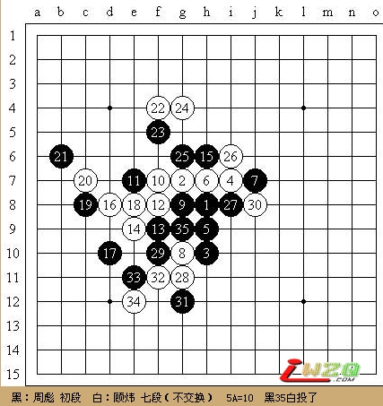
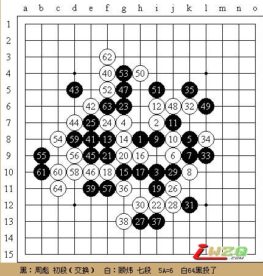

上海连珠活动记（一）
#1 上海连珠活动记（一） 作者：有志青年 发表时间：2007-5-14 6:43:15
原文地址：http://www.shwzq.com/testww/ShowArticle.asp?ArticleID=1331
日期：2007年5月12日周六、阴有雨
地点：浙江中路229号百米香榭三楼古滇茶坊
参加人员：周彪初段、樊星岑三段、李洁3级（女）、郑蔚楠初段（女）、易伊神5级、黄宇峰三段、沈毅二段、顾炜七段、俞满江五段、叶海初段、薛文曦六段
上海五子棋每周一次的活动已经雷打不动整整10年了（如不扣除SARS时的半年，则接近11年）。从户外露天活动转入室内活动也已经7个年头。这么多年，活动能够正常进行，要感谢积极支持和参加活动的棋友，同时也要感谢那些一直默默无闻的活动组织者，如：李北峰、李洪斌、顾伟国、顾炜、黄民城、戴越、易伊神等。
今天是“五一”长假后的第一个双休日，不少人还没有完全调整过来，因此参加活动的会员不多。周彪是最早到的。因为按照协会的计划，这天应该是“小棋战”，作为本年度大部分赛事的裁判长，我们的彪哥（周彪）很辛苦，凡是比赛总是早早抵达赛场准备。可能是因为长假后的不适应，差不多所有会员都忘记了。据顾炜后来回忆，只有樊星岑曾经在赛前问过，但是顾也忘了，不过谨慎起见还是请他问裁判长周彪。所以，樊星岑来的也很早。
午饭后，会员们陆陆续续来了。当顾炜来前，我们的彪哥正和沈大师（沈毅）快乐地下着十番快棋赛。两个人落子飞快，经常是一转眼，棋盘上已经是星罗棋布，沧海桑田了。尽管偶尔的错进错出令人心痒，但是这种快乐的心情才是最令人心情愉悦的。协会活动管理员小神（易伊神）是个有趣的男孩，本身具备业余围棋四段的实力，目前是连珠5级，潜力无穷，认真学习的话，应该会成为上海年轻棋手中的佼佼者。他正拉着43（黄宇峰）实战锻炼。上游的小白（李洁）则认真的和樊星岑对局。虽然是女棋手，但经验丰富，不仅参加过多项大赛，而且战绩不俗。因此，尽管樊星岑技高一着，要想轻松取胜却也不容易。当小神终于无奈但略显轻松的结束了苦防的“悲惨”命运后，行云流水（顾炜）披挂上阵，和43开始对练了。顾炜显然不在状态，连续被43砍了2把。一旁的叶海目睹顾炜的败局后，对行云流水进行了“无情”的调侃。顾炜只得退位给好久没来的当年六小龙之一的叶海，然后转身找小神找感觉去了。“可怜”的小神信心满满的和顾老师对局，结果却是郁闷了一把。不过索性还是有收获的，至少对于瑞星的变化熟悉了不少。而无辜的樊星岑则和小神相似，承受着阿布（郑蔚楠）的攻击。想不到阿布的攻击力量与日见长，樊星岑似乎最终也没有经受住考验。另一边的十番棋赛已经结束，彪哥以6：4的成绩战胜了沈大师，荣获第一届快棋名人称号。值得一提的是，这天的活动，刚刚获得第五届上海名人邀请赛冠军的满满特穆尔（俞满江）名人的抵达，使得活动场地增色不少。名人此后同姗姗来迟的小薛独自大战，堪为经典。顾炜调侃说，参加名人赛上网竞猜选手中的2位估计在“避风头”，因为买他们夺冠的棋友估计一时半会儿还解不了套。当顾老师结束同小神的指导棋后，第二届快棋名人十番赛开始，由行云流水向彪哥名人挑战。双方下的是快棋，错进错出的不在少数，尽管顾老师状态很不“灵光”，彪哥极为认真，但是遗憾的是运气最终没有向亲爱的彪哥倾斜。顾炜最后以6：1取得胜利。而一边的叶海也够郁闷的，接连败给43，心情极其不爽。一天的活动到18:30结束了，部分棋手在小白带领下，开始到体育场所进行体能锻炼了。

